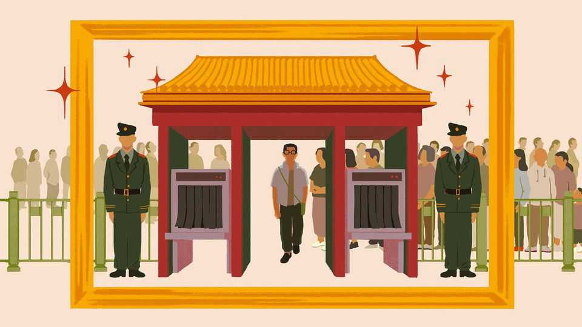

China’s officials are obsessed with safety theatre
The public likes all the controls—until they get in the way

Aug 13th 2026
TAKING THE escalator is full of danger at the new metro station in Jinan, a city in eastern China. Or so the warning sign suggests. It bars 14 actions in all, each illustrated with a red line through it: no walking on the escalator, no facing the wrong way and certainly no playing. There are also seven instructions, including to use the handrail, hold young children firmly and be careful in soft shoes.
With trepidation, Chaguan stepped on—and made it to the bottom unscathed; the escalator, indeed, was like any other. Most passengers barely even noticed the sign. They also took the security at the metro’s entrance in their stride. The checkpoint looked like an airport’s, with a metal-detector gate, an X-ray machine for bags and guards wielding scanners. There was also a giant explosion-proof pot for suspicious items. But the guards were relaxed. One cheerily said the pot had never been used. It was a breeze to pass through, just as in stations across China.
Until, on occasion, it isn’t. In late July, transport authorities in Shenzhen, a southern metropolis, suddenly tightened metro security. Instead of waving their wands desultorily at passengers, guards carefully scanned everyone. When bag X-rays revealed cigarette lighters or perfume bottles above permitted limits, these were confiscated. The security lines stretched and stretched, with some travellers waiting half an hour. The apparent rationale was Shenzhen’s hosting of the APEC summit later this year. President Xi Jinping will attend, and nothing must go wrong.
To Shenzhen’s credit, it quickly adjusted when residents complained. “I’m more worried about getting crushed in the crowds than about terrorism,” was a typical comment online. Within days, Shenzhen had streamlined checks and installed extra metal detectors, letting riders go back to commuting with little bother.
Even so, the episode illuminated a daily balancing act in China between safety and freedom. Commentators outside China often dwell on the dystopian elements. Surveillance cameras are everywhere, social-media posts are closely monitored and checkpoints are common in sensitive areas. Yet inside China, few people end up on the wrong side of these measures, and popular approval of them appears very high. Researchers consistently find that many Chinese citizens think safety should trump privacy. In Jinan, the elderly were most effusive. “There are so many people. The security is needed. It puts us at ease,” said Ms Ren, a grey-haired woman heading for the metro.
One way to view China is as a security state, with spending on domestic policing and “stability maintenance” roughly as high as its military budget. Much is aimed at political threats, reflecting the Communist Party’s fear of its own subjects. But the transport controls point to something different: China as a safety state, where the party places a high priority on the prevention of accidents and everyday violence. That impulse is commendable. In practice it can be stifling.
The Shenzhen experience illustrates the tension that sometimes surfaces—not so much over safety versus personal liberty as over convenience. When security checks are nearly frictionless, there is support for them; when friction mounts, attitudes change. Bluntly, people like the safety state until it gets in their way, especially when controls seem out of proportion to the actual threat. A huge example was the zero-covid policy. The public initially supported the government’s restrictions, accepting the lockdown of Wuhan and subsequent quarantines of particular people and areas as a price paid by the few. But by late 2022 exhaustion had set in and rare protests erupted. In Beijing it was seen as a lesson in why officials must be alert to shifts in opinion before the clamour for relaxation becomes more political.
These pivots do not happen readily. The issue is not that officials are naturally obsessed with safety. Rather, safety is core to their careers. In what is known as the “one-vote veto” system, they can lose out on promotion because of a single security breach or serious accident. Under Mr Xi that veto has been strengthened: officials are punished not just when something bad happens, but when they fail to enforce safety protocols. Inspection teams rock up at metro stations to check X-ray machines, or show up on streets to make sure patrols are in place. Visible controls have proliferated: helmeted guards in front of day-care centres, phalanxes of police at pop concerts and football matches (far more than are needed to watch over the peaceful crowds), and anti-riot shields at the ready in banks and shopping malls. The escalator warnings on the Jinan metro are at the comic end of all the theatre, a case of cover-your-pigu paternalism.
There is a further trade-off for officials, one which will bite more over time. All the safety costs money. The bill for the guards alone runs to about a tenth of metro operating budgets. Their salaries are not high. But a shrinking labour pool will surely push wages up over time, an uncomfortable prospect for indebted local governments. Objectively, the layer upon layer of safety is overkill. China is, without question, a very safe country. The country averages nearly 100m riders a day on its metro systems, about half of the world’s total. Crimes, big or small, are vanishingly rare on them.
But is that thanks to all the checkpoints? Surely ordinary Chinese deserve credit for their orderly behaviour. And to the extent that security measures prevent crime, the cameras that snoop on streets, stations and trains are more useful—and less expensive—than the guards and X-rays. Yet that is not the calculation of officials, for whom safety is less about efficacy than about showing that they leave nothing to chance. And please remember: no walking on escalators. ■